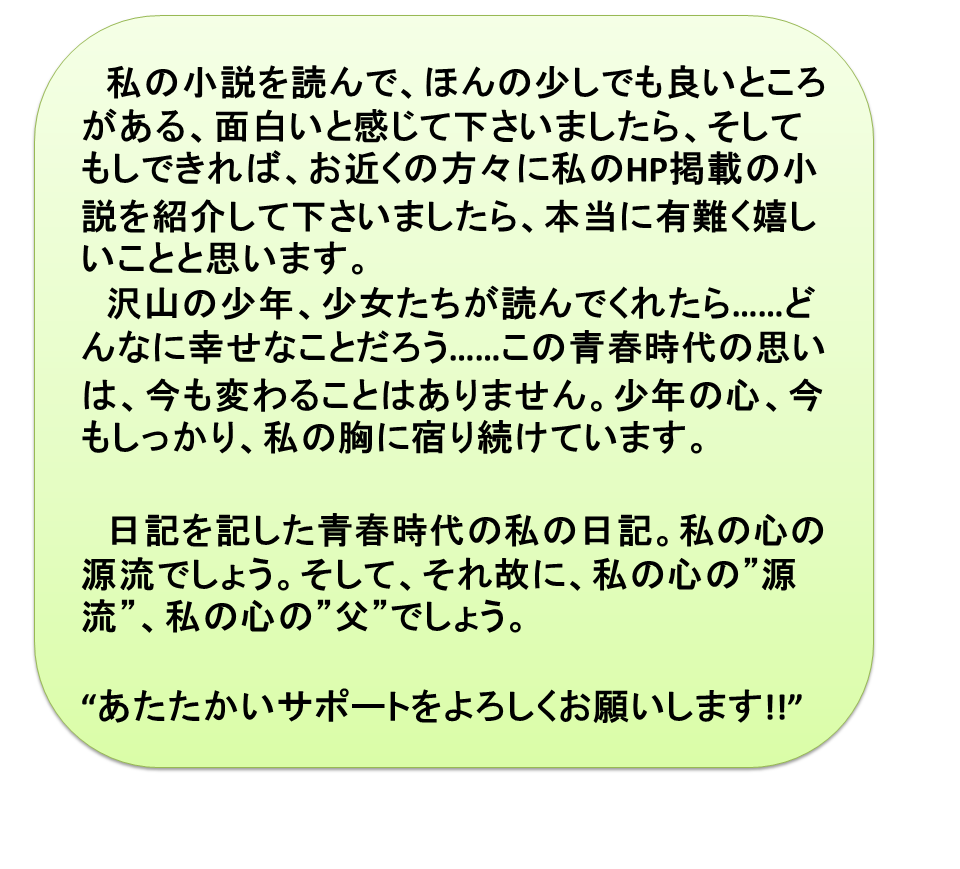

私が小説を始めたその訳
昨年の春ごろだったでしょうか、自宅研究室に山積みされた書類の整理を、近くの大学の学生さんＴ君が、手伝ってくれていました。
沢山の研究論文の下書きノートにまざっていた古いノートを私に示し、
“先生、これはどうしましょう？ 処分しますか……”
と言って手渡してくれたのが、古いノートでした。
捨ててしまおうかな？ と思いながらペラペラめくってみると、何と若かりし頃の私の日記ではありませんか！
しかも当の本人である私にとっても、全く驚天動地の内容の日記だったのです！
“えっ！、まさか！ まさか！”
と思って読んだ古い日記、以下に示しましょう。なお、この日記は、ある国立大学で学位を修得して、工学部通信工学教室の助手（現在助教）として、希望に満ちて働いていたに違いないと、今、思い出される頃のものです（……しかし実際は、筆舌に尽くし難く、悩んでいたのでした……）。
我が青春時代の日記
１９６６．１．４
筆をとると今まで考えていたことがかき消えてしまい、さて何を書いていいのやら、全くとまどってしまう。心の中でいろいろ浮かんでくる考へをそのまま文章に表すことはほんとうにむつかしいことだ。自分は小説が好きである。しかもどちらかと云えば読むよりは書くことに興味をおぼえる。
今読んでいるサマセット・モームの月と六ペンスは自分の書き方とずいぶんちがうけれど彼の藝術に対する考え方は僕の心をはげしくゆさぶる。そしてもうがむしゃらに何か書かねば気がすまなくなるほどに僕の創作本能を刺戟する。
つまり僕はサマセット・モームの小説を読むのはそれがおもしろくて、いわゆる忘我の状態にしてくれることを目的としているのではなく、僕の創作本能、あるいは僕の心の中にある芸術の建物をますます魅力あるものとしてくれるから……読むのである。
テレビのちょっとした何でもない画面(実際、そんな画面がどんな画面であったか僕自身忘れてしまったが)が同じように僕の創作本能を刺戟してくれる。
もし僕が100年ほど前に生れていたら間違いなく小説家になっていただろう。こう思うと現在の自分が何だか歪んだ存在であるように思われる。自分でありながら依然として自分でない自分という感じがする。
むろん通信工学も魅力ある学問である。しかし小説の魅力に比べれば殆んど問題にならない。通信工学を一生の仕事とすることは安全ではあるけれど果して自分にとってそれが幸福に結びつくか疑問である。
要は僕は自分がたぶんもっとも得意とする小説の分野で自由奔放に筆をふるってみたいと思うのだ。ところで僕の小説の題材は果して何人の人々が興味をもってくれるだろう。
アメリカ的消費文化、ゴルフ等のデラックスな趣味、エレキ、モンキダンス、これらのいりまじって作っている世界が現在の世界であって、僕の小説の中でえがくせかいとはずい分遠いのだ。
僕が創作本能を刺戟され、つぎからつぎへと心の中で展開するドラマによいしいれているときだけが僕がもっとも幸せな瞬間なのかもしれない。
アメリカ的消費文化、デラックスなムードは電波に乗って全国のすみずみにまで浸透し、全ての人々が酔っているときに僕の心の中で展開された小説を文章にして出版したとしても、本屋のすみっこで眠るだけであろう。
例えば幸せとは何か？ というふうなことをテーマにして小説を書き出版したとしても何人の人が読んでくれるであろうか。
現実の世界はあまりにもせつな的であり、その日ぐらしであるのに幸わせについてたとえどんなに深くほり下げた小説を書いてみても誰も相手にはしないであろう。
たった今、若い生命が交通事故で失われたとしよう。しかし、その五分後にはエレキギターをならした別の若もの達が同じ道を喜々としてスポーツカーで走り去ったとしても別に何の不思議もない世界これが現実の世界ではなかろうか。……そしてこんなことが正当になりつつある。
僕が小説家としてじゃんじゃん売りたければ今の文化をもっと刺戟するため、無責任をきわめた題材で、無責任をきわめたどぎつい表現で小説を書けばよいであろう。
しかしそれはたとえ成功して如何にもうかったとしても僕自身には何の幸わせももたらさないのだ。
だが小説家の存在意義はやはり社会があってこそ成り立つ。孤島で一人小説を書き一人で楽しむ等とは如何に生活が保障されても出来るものではない。小説に興味をもつことは云いかえれば社会に興味をもつことであるからだ。僕のあつかましい考えを披露するところである。
自分にとって不満の多い現代社会を見つめること、これが僕の心に小説の種をまき、そして今どうしようもないほど大きくなって近いうちに出版しようと思っている。しかしその小説は現代生活にあまりにそぐわないものが多い。にもかかわらず多くの人々が僕の小説を読んでくれることを望んでいるのである。それによって僕は小説家としての満足感を味わってみたいのである。
人生について考え、心ある人と話をしたいのだ。しかしこれはあまりにもあつかましく、またこんなことを期待したのでは筆が力みすぎる。しかもたとえ自分の小説が沢山の人々によって読まれなくてもそれが一体どうと云うのだろう？
自分の書いたものにどこかの少女が感激し、青年が共感し、少年が勇気を得るならばどんなに生甲斐のあることであろうか。週刊雑誌を読みふけり、レジャーを追い求める連中が僕の小説に一切かん心をもたなくても、これは当然と云うべきであろう。若い希望にみちた世代が僕の小説に共鳴してくれれば、僕の小説家としての満足は至上なのである。
T君が入力してくれた日記を出力し、妻そして長男夫妻、長女夫妻に見せたときの反応はやはり、“驚天動地”という反応。
“まさか！ まさか！ まさか！ お父さんが、こんな日記を書いていたなんて……まさか！”の反応でした。
この日記を記した後、私は間もなく結婚し、僅か一週間後、勤務していた大学を2年間の期限を越えないという制限つきで休職し、米国の企業に就職しました。
米国で巡りあった沢山の友人達が
“２年間のハネムーン、終わりましたね！”
と言って、別れを惜しみ見送ってくれることとなったベル電話研究所（BTL）に勤務することとなったのです。。
BTLは、当時、世界最高レベルの研究所。ディジタル時代を切り拓く原動力、トランジスタの発明もこの研究所でなされたものです。私は、我を忘れて研究に没入するとともに、沢山の友人、帰国後もずっと交際することとなった友人達に巡り合って、米国生活を最大限にエンジョイしました。
帰国後、勤務した二つの国立大学、そして一つの私立大学ではワクワクするような毎日、熱烈教師生活そして、創造的研究者生活を“天職”と考えていました。沢山の優秀な楽しい学生さん達に囲まれて、教育研究に埋没する毎日でした。
日記の内容は、このような生活の中で、私の頭の中からは雲散霧消してしまったのです。勿論小説のこともです。
“まさか！こんな自分が存在していたのか！”
こんな驚きの中で、好きな研究を“生涯一研究者”を強く胸にし若い沢山の人達と一緒に続けて現在も続けている私です。
最近……、青春時代の忘れ物“小説”を、まるで隣の部屋に入って探すような感覚で、ごく自然に小説創作を始めました。去年、2014年の春頃のことです。
“自分の書いたものにどこかの少女が感激し、青年が共感し、少年が勇気を得るならばどんなに生甲斐のあることであろうか”
“若い希望にみちた世代が私の小説に共鳴してくれれば、私の小説家としての満足は至上なのである”
という気持が出発点。この気持は今も強く、強く、あります。
